Detecting objects in one pass: YOLO
About this lecture
How does one pass of a network turn an image into a list of 3 or 300 boxes? The family of single-shot detectors called YOLO (“you only look once”; Redmon et al., 2016) answers it with a grid of guesses.
- The grid: the image is cut into cells at three sizes; every cell makes one guess.
- What a cell predicts: four distances to the box sides, each as a distribution, and a score per class.
- Decoding: threshold the scores, turn cells into boxes, NMS (per class or across classes).
- Where the guesses used to come from (anchors, centre heat maps), how the network is trained, why it is fast.
- Boxes for cells: what a photo-trained detector does on a micrograph.
Slides titled The math give the formulas and proofs; the ideas are complete without them.
Recall: many boxes per object
From “Finding objects as boxes”:
- A box = 4 numbers + a class + a score; overlap measured by IoU.
- Every object gets many candidate boxes; greedy NMS keeps the best and removes boxes that overlap it by more than t.
Left open there: where do the candidates come from, and how can a network with a fixed output size describe any number of objects?
On the right: the real network’s candidates on a street photo before NMS: 54 boxes above a score of 0.1, for 5 objects.
Photo: Ultralytics sample image, AGPL-3.0.
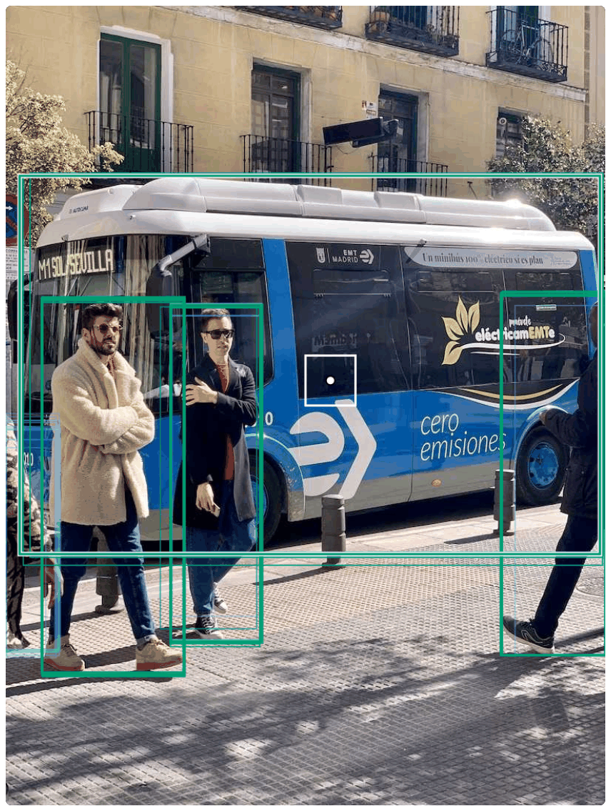
The grid: one guess per cell
The network’s last layers are coarse grids: the image cut into cells of 8, 16 and 32 pixels (the stride).
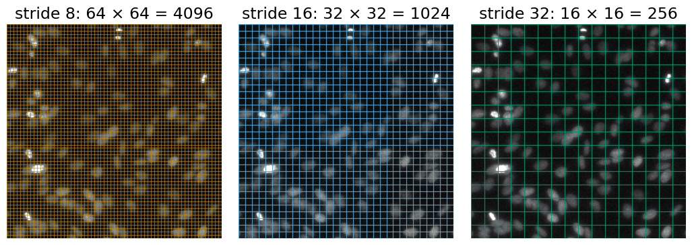
Image: StarDist test image (fluorescent nuclei from the 2018 Data Science Bowl data), BSD-3-Clause.
- A 512 × 512 input: 64^2 + 32^2 + 16^2 = 5376 cells (640 × 640: 8400). Every cell makes one guess: “is there an object whose box contains my centre, and where are its sides?”
- A fixed number of guesses, most of them “nothing”: that is how a fixed-size output describes any number of objects.
What one cell predicts
Per cell: four distances from the cell centre to the left, top, right and bottom side of the box (in strides), and a score per class (80 for the photo model).
Worked example: stride 16, row 5, column 7.
- Cell centre: (7.5 \cdot 16,\ 5.5 \cdot 16) = (120, 88) px.
- Distances 2.5, 1, 1.5, 2 strides = 40, 16, 24, 32 px.
- Box: x from 120 - 40 = 80 to 120 + 24 = 144, y from 88 - 16 = 72 to 88 + 32 = 120.
- True box (84, 70)–(150, 122): IoU 0.79.
The cell does not have to sit at the box centre; it only has to lie inside the box.

The math: decoding a cell
Cell in row i, column j of the grid with stride s; distances d_l, d_t, d_r, d_b in strides:
(x_1, y_1, x_2, y_2) = s\,\big(j + \tfrac12 - d_l,\ \ i + \tfrac12 - d_t,\ \ j + \tfrac12 + d_r,\ \ i + \tfrac12 + d_b\big).
Each distance is the mean of a distribution over the bins 0, 1, \dots, 15:
d = \sum_{k=0}^{15} k\, p_k, \qquad p = \mathrm{softmax}(z), \quad p_k = \frac{e^{z_k}}{\sum_m e^{z_m}},
from 16 numbers z_0, \dots, z_{15} per side. Class c: an independent probability \sigma(z_c) = 1/(1 + e^{-z_c}), not a softmax over classes: a box may score high for two classes, or for none.
Per cell: 4 \times 16 + C numbers; C = 80: 144.
Distances as distributions
Each distance comes as 16 probabilities over 0, 1, …, 15 strides; the decoded distance is their mean.
- Half on 2, half on 3: 2.5.
- All on 1: 1, a sharp, confident edge.
- 0.6 on 2 and 0.4 on 9: 4.8, a side where neither guess is: an uncertain edge (blurry, occluded, cut by the image border).
Consequence: a side can be at most 15 strides from the cell centre: 120 px at stride 8, 240 at stride 16, 480 at stride 32. Large objects must come from the coarse grids.
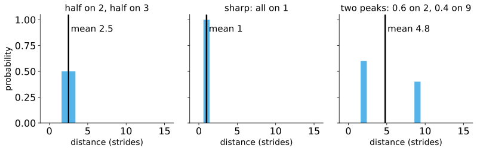
The math: the distribution loss
Training target: a true distance y between the bins k and k + 1. Loss on the side’s distribution p:
L = -\big((k + 1 - y)\log p_k + (y - k)\log p_{k+1}\big).
Minimise over p_k + p_{k+1} = 1: \;p_k = k + 1 - y, \;p_{k+1} = y - k, whose mean is
k(k + 1 - y) + (k + 1)(y - k) = y \quad\text{exactly.}
Target 2.3: 0.7 on 2, 0.3 on 3. A one-hot target on the nearest bin (2) would teach a distance that is off by up to half a stride (4 px at stride 8, 16 px at stride 32).
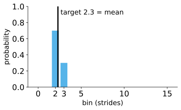
Scores and classes
Per class an independent probability from one number (the logit) through the S-shaped sigmoid:
| logit | 1.2 | −0.5 | −3 |
|---|---|---|---|
| probability | 0.77 | 0.38 | 0.05 |
- A candidate is a (cell, class) pair whose probability is above the score threshold (0.25 by default).
- Neighbouring cells, and cells of other strides, all see the same object: several candidates per object, with slightly different boxes.
- In the bus photo at threshold 0.25: 45 of 5376 cells × 80 classes pass (7 at stride 16, 38 at stride 32, none at stride 8).
- The score maps (one per stride, the best class probability of every cell) show where the network thinks objects are: next slide.
Three scales: a feature pyramid
- Fine grid (stride 8) for small objects: many cells, short reach (120 px).
- Coarse grid (stride 32) for large objects: few cells, long reach (480 px), and each cell sees a large part of the image.
- The coarse maps are upsampled and merged into the fine ones, so the small-object guesses also see context (feature pyramid; Lin et al., 2017).
In the bus photo (input 512): the bus and three people come from stride 32 (green), the person cut by the left border from stride 16 (blue). Stride 8 has nothing to do here: no small objects.
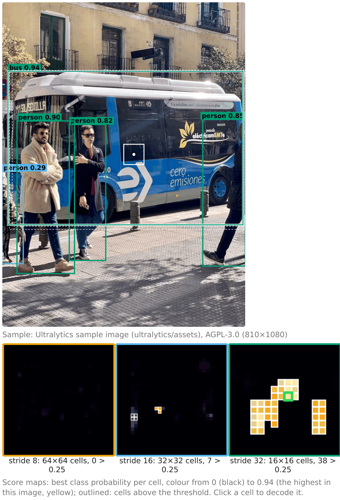
Decoding: from candidates to a list
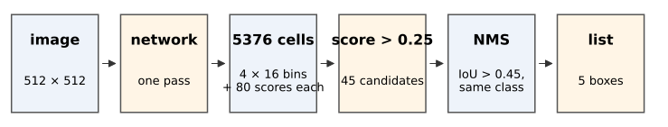
0.25: 45 candidates → NMS (IoU > 0.45, same class) → a list of 5 boxes (the bus photo).">- Threshold the scores: thousands of cells become tens of candidates.
- Decode each candidate’s box from its four distributions.
- Greedy NMS (recall): the best box removes the others that overlap it by more than t (0.45 by default). In the bus photo the four large boxes removed 9 or 10 others each.
- The result is the list: as long as the image needs.
NMS per class or across classes
Class-aware NMS compares only boxes of the same class; class-agnostic NMS compares all.
Six boxes, two classes (exercise B3): b1 cell 0.90, b2 cell 0.80, b3 cell 0.75, b4 debris 0.60 (almost on b1), b5 cell 0.50, b6 cell 0.20.
- Class-aware: b1, b3, b4: the debris box survives on top of the cell.
- Agnostic: b1, b3: b4 is removed by b1 (IoU 0.90).
Which is right depends on the question: can one object be both? In the photo model at input 256, a “bus” (0.46) and a “truck” (0.40) box on the same vehicle are both kept by class-aware NMS.
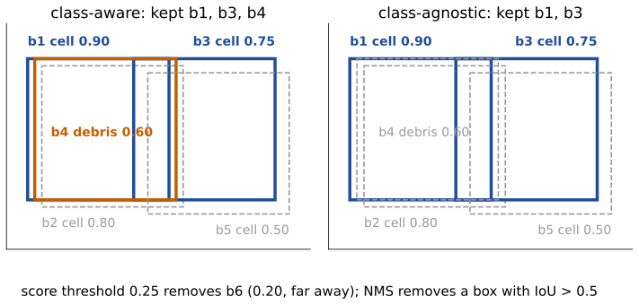
The math: output size and the cost of decoding
Input S \times S, strides s \in \{8, 16, 32\}, C classes:
A = \sum_s (S/s)^2 \ \text{cells}, \qquad A \times (4 \cdot 16 + C) \ \text{numbers}.
S = 512, C = 80: 5376 \times 144 = 774\,144 numbers; S = 256: 1344 cells; S = 640: 8400.
Decoding is cheap: one softmax and one mean per side, O(A(64 + C)); NMS on m candidates costs at most O(m^2) IoUs, and m is small after the threshold (m = 45 in the photo).
Class-aware NMS = NMS run separately on each class. The two variants are not nested: a box removed early by class-agnostic NMS can no longer remove others, so agnostic NMS can keep a box that class-aware NMS removes (exercise B10).
Try it: decode by hand, then the whole grid
Before: anchors and centre heat maps
The grid of guesses is older than the distance head:
- Anchors: each cell owned a few template boxes (sizes and shapes chosen in advance) and predicted a correction to them. An object was learned only by anchors overlapping it with IoU ≥ 0.5: objects much smaller, larger or longer than every template were never learned.
- Centre heat maps: a map with a bump at every object centre; objects = local maxima (the Hough day’s peak picking); close objects merge, noise gives double peaks.
- Current single-shot heads keep the grid and drop the templates: “my centre is inside the box” decides who answers.
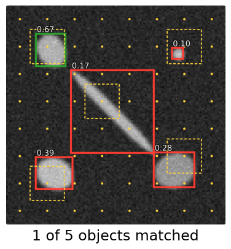
The math: boxes relative to an anchor
Anchor centre (x_a, y_a), size (w_a, h_a); the network predicts
t_x = \frac{x - x_a}{w_a}, \quad t_y = \frac{y - y_a}{h_a}, \quad t_w = \log\frac{w}{w_a}, \quad t_h = \log\frac{h}{h_a}.
- Dividing by the anchor size makes the targets the same for small and large objects.
- The log: twice too wide and half as wide are equally wrong (\pm\log 2); w = w_a e^{t_w} is always positive; an error in t_w is a relative error in w.
- Centre heat map instead: target Y(p) = \max_k \exp(-\|p - c_k\|^2 / 2\sigma^2); objects are the p with Y(p) = \max_{q \in W(p)} Y(q) and Y(p) \ge \theta.
- Either way, most positions are background: easy negatives are down-weighted by a factor (1 - p)^\gamma in the cross-entropy (the focal loss; Lin et al., 2017).
Training in one slide
- Who answers for an object? Cells whose centre lies inside its box, preferring central cells and the stride whose cells predict it best (the “assignment”). All other cells are taught “nothing here”.
- Losses for the responsible cells: an IoU-type loss on the box, the distribution loss on each side, a classification loss on the scores.
- Most cells are background: easy negatives are down-weighted, as in the focal loss.
- Fine-tuning on a new kind of object needs a box around every object in a few hundred images.
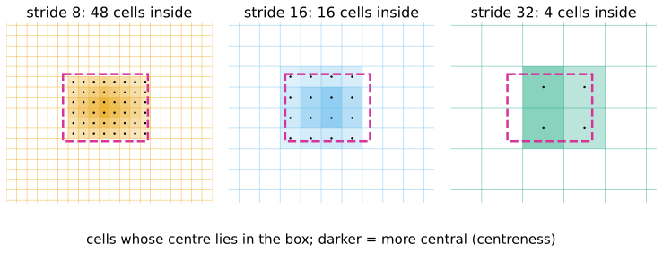
The math: a box loss with a gradient everywhere
1 - \mathrm{IoU} is flat (= 1) for disjoint boxes: no gradient (recall the boxes unit). Generalised IoU (Rezatofighi et al., 2019), with C the smallest box enclosing A and B:
\mathrm{GIoU} = \mathrm{IoU} - \frac{|C \setminus (A \cup B)|}{|C|} \in (-1, 1].
A = [0,4]^2, B = [6,10] \times [0,4]: IoU 0, C = [0,10] \times [0,4], gap 40 - 32 = 8: GIoU = -0.2. Move B one to the left: -4/36 = -0.11. The loss 1 - \mathrm{GIoU} falls as the boxes approach.
Current heads use a variant with a centre-distance and an aspect-ratio term (CIoU).
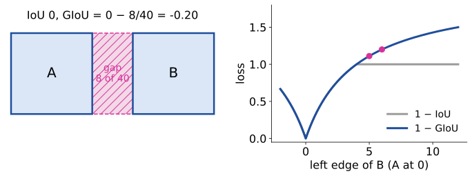
Speed: one look
- One pass of the network for the whole image, then thresholding and NMS on a few dozen candidates: no per-object network runs.
- The smallest model of the family has about 2.6 million weights. In the browser (WebAssembly, one CPU core), measured in the demo: about 0.85 s for a 512 × 512 input, 0.22 s for 256 × 256; decoding and NMS take milliseconds.
- On a graphics card the same network runs in a few milliseconds: hence its use for video and live microscopy (tracking by detection: the tracking day).
- Smaller input = faster, but small objects fall below the finest stride (exercise E4).
Boxes for cells?
- Boxes are good for counting, tracking, cropping each cell for a second step.
- Poor for touching, long or diagonal cells: a 45° rod fills 16 % of its box, and boxes of neighbours overlap a lot (recall the boxes unit).
- The photo model on fluorescent nuclei: nothing at the default threshold; its best score anywhere is 0.045. At 0.01: “person”, “sports ball”, a “bus” around the whole image. There is no class “cell”: the strongest out-of-domain failure of the day.
- A cell detector needs fine-tuning on annotated cells (a box per cell).
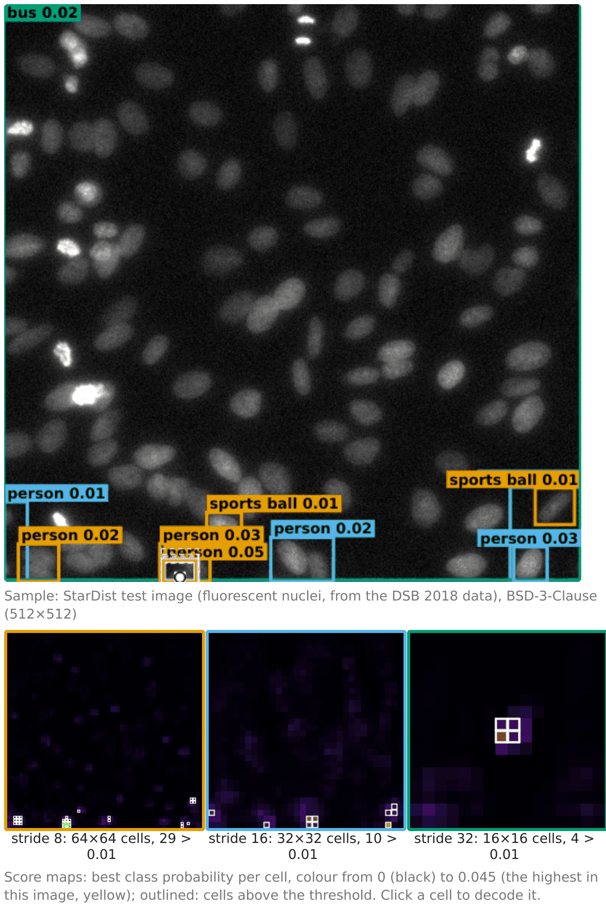
Try it: the real network
Summary
- A single-shot detector covers the image with grids (strides 8, 16, 32) and lets every cell guess: a fixed number of guesses describes any number of objects.
- A cell predicts four distances (each a distribution over 16 bins; the mean is the distance) and a probability per class.
- Decoding: score threshold → candidates → boxes → NMS (per class or across classes) → the list.
- Reach of 15 strides and cell size tie object size to the stride: large objects need coarse grids, small ones fine grids.
- Older heads: anchors (objects unlike every template are never learned) and centre heat maps.
- Fast (one pass), boxes only, and only the classes it was trained on: on cells, a photo model finds nothing.
Where this leads
- A mask head inside each box: instance segmentation in one pass (the masks of the instances unit, per box).
- Tracking by detection: detect in every frame, then link the boxes (the tracking day).
- Prompts for a promptable segmenter: boxes from a detector → masks (next unit: promptable segmentation).
- The comparison of cell networks and classical pipelines on the same images: the last unit of this day.